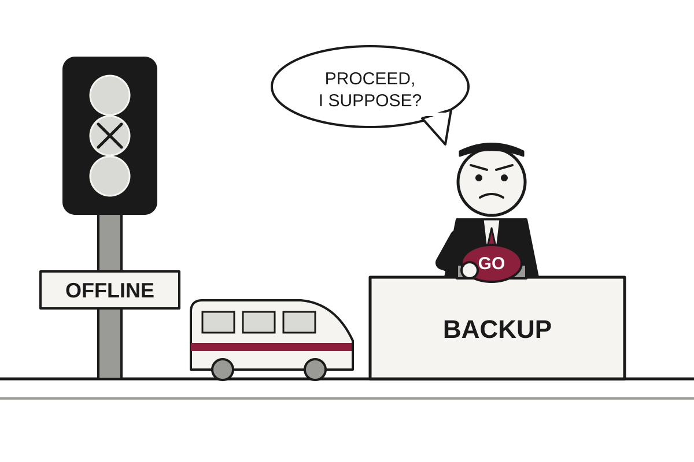

5 Things in 60 Seconds
- A Renfe high-speed train rammed the back of a stationary Iryo train south of Madrid, killing at least 68 people, after Spain's control centre reportedly told trains to resume moving following a signalling failure, a decision the transport minister called "inexplicable".
- Israel's election is unresolved: with roughly 85 percent counted, Netanyahu's bloc has 53 seats and Eisenkot's 48, neither near the 61 needed, and both men say they will form a government.
- Iran says it is in close contact with mediators on a seven-day plan to reopen the Strait of Hormuz, while Trump denies ordering peace talks and says contact was about medical supplies, a distinction with remarkably little difference.
- The Federal Reserve held rates at 3.75% to 4% on a 10-2 vote, with Lisa Cook and Beth Hammack dissenting in favour of a hike, so the only disagreement was over how much to worry about inflation.
- Alphabet fell more than 10% after missing earnings estimates and posting negative free cash flow of $9.07 billion, while Oracle rose 11% on a promise of $225 billion in revenue in fiscal 2030, proving that investors reward ambition only when it arrives on a slide.

Spain's Rail Control Centre Tells Trains to Resume, Minister Calls It 'Inexplicable'
At least 68 people died when a Renfe train hit a stopped Iryo train south of Madrid, in Spain's second major rail disaster this year.
The wire said: High-speed train crash kills at least 68 people in Spain · BBC World
A high-speed train crash in central Spain killed at least 68 people and injured dozens more on Wednesday, the BBC reported. A Renfe train carrying 397 passengers ran into the back of a stationary Iryo train carrying 147, shortly after 09:00 local time. Several carriages fell down an embankment. It is Spain's deadliest train disaster since 2013, when 80 people died near Santiago de Compostela.
The sequence matters, because it is the whole story. According to Transport Minister Óscar Puente, an automatic signalling failure had forced trains on the affected stretch to stop. Translation: the computer that normally keeps trains apart stopped working, so the system fell back on people. A 24-hour control centre in Madrid takes over in such cases, and Puente said it made an "inexplicable" decision to tell the trains to move again, with no speed restrictions.
Geopolitics

Israel Votes, Counts, and Discovers Nobody Has 61 of the 120 Seats
With about 85 to 90 percent of ballots counted, Netanyahu's bloc leads with 53 seats to Eisenkot's 48, and 19 Arab-party seats hold the arithmetic.
Partial results show Prime Minister Benjamin Netanyahu's bloc leading Israel's election without a majority. With about 85 percent of ballots counted, the BBC reported, Likud and its far-right and ultra-Orthodox allies were on track for 53 seats in the 120-seat Knesset. Eisenkot's Yashar party and three other Jewish opposition parties were set for 48. A majority requires 61, a number neither side is near, which is the sort of detail that tends to matter in elections.
Both men have said they will form a government. Translation: both men intend to be asked, and both have told the public that the public has already asked. Netanyahu declared a "great majority" at Likud headquarters. Eisenkot said the public had "spoken in favour of change." The two claims cannot both be right, though the count suggests they can both be wrong.
Flávio Bolsonaro Loses Election, Flies to Miami, Revises Title Three Times

The senator who lost Brazil's runoff on Sunday landed in Florida on Wednesday and declared himself 'leader of Brazil,' a downgrade from 'true president' that took roughly one edit.
Iran Offers Seven-Day Plan to Reopen Hormuz; Washington Denies Talks, Cites Medical Supplies

Three regional powers visit Tehran, Iran says it is in close contact with mediators, and President Trump says any contact with Iran was about medical supplies.
Serbia Raises Terror Alert to Red After Knife Attack at Israeli Embassy
Police shot dead a teenage attacker in Belgrade who was already on security services' radar, and the country moved to its highest threat level.
Elsewhere on the wire
Serbians storm TV studio as pro-Vucic media faces reckoning Al JazeeraEgypt fines prominent editor Lina Attalah and shuts independent news outlet Mada Masr The GuardianBrazilian political drama unfolds as defeated Flavio Bolsonaro arrives in Miami NPR WorldAfrica’s ‘unprecedented’ Ebola outbreak could reach UK, says top health official The GuardianIsrael's election too close to call. And, the Ebola outbreak reaches grim milestone NPR WorldHow do the US midterms work, and why are they so important for Trump's presidency? DWAI

Anthropic Files 335-Page IPO Prospectus, Lists Humanity's End Under 'Risk Factors'
The AI lab's S-1 pairs soaring revenue and a quarterly operating profit with a lengthy catalogue of ways the company, or everyone, could come to grief.
Anthropic has filed a 335-page prospectus for its initial public offering, according to MIT Technology Review, with roughly 100 pages devoted to risks. Ars Technica counted more than 70,000 words in the Risk Factors section alone. Translation: an S-1 is the document a company must file with the Securities and Exchange Commission before selling shares to the public, and its risk section exists so that nobody can later say they were not warned. Anthropic has taken this duty seriously.
Some of the risks are the usual business fare: competition, costs, customer acquisition and regulation. Others are less usual. Ars Technica reported that the company warns of models that could automate AI research and development and advance past its ability to evaluate and safeguard them. Anthropic adds that such a development could also hurt its business, financial condition and results of operations. Ars Technica observed, fairly, that the quarterly results would probably not top humanity's list of worries in that scenario.
Microsoft Finally Tells Investors What Azure Earns, Mostly Because Rivals Already Did

Azure brought in $33.2 billion last quarter, Microsoft's first dollar disclosure, as total revenue hit a record $92.3 billion and $10 billion came from OpenAI.
Anthropic's Bug Bounty Program Works Exactly as Advertised, to Anthropic's Evident Surprise
Cathedral, a security startup, used AI agents to get into Anthropic's internal systems through third-party software, and the two sides now disagree on how long it took, how far it went and whether the rules were followed.
Google's Genie 4 Builds Whole Worlds on Demand, Then Forgets Them in Minutes

DeepMind's new world model adds sound, dialogue and Gemini supervision, but access is limited to select testers and consistency still fades in longer sessions.
Elsewhere on the wire
Adam Mosseri says negativity around AI is ‘going to get worse’ The Verge AICreating AI value with enterprise context MIT Technology ReviewGoogle expands AI Search ads globally as core ad growth slows TechCrunch AIAkai is embracing vibe-coded mods with an open-source MPC The Verge AIThe Download: dead startups fueling AI and interspecies communication MIT Technology ReviewGoogle opens Android development to third-party AI agents and unveils new Gemini APIs The DecoderTechnology

Apple Finally Lets You Touch the MacBook Pro, Provided You Can Afford It
The new OLED MacBook Pro adds a touchscreen Steve Jobs opposed, and a fully loaded 16-inch model reaches $14,549.
Apple on Tuesday announced a redesigned MacBook Pro with an OLED display and a touchscreen, according to Ars Technica, ending a debate that has run for well over a decade. Steve Jobs was famously opposed to touchscreen laptops. The company has now decided that the idea merits reconsideration, which is how large companies say they were wrong without saying it.
The display is the main event. Ars Technica reported that it reaches 2,000 nits of peak brightness and a 10,000,000:1 contrast ratio, and that Apple is calling it the PROLED XDR. Translation: a nit is a unit of brightness, and contrast ratio is the gap between the brightest white and the darkest black the screen can show. Apple says that gap is large. Apple referred to burn-in protection, the tendency of OLED screens to retain ghost images, but did not say how it works.
Microsoft Reports $36.6bn Profit Days After Offering Buyouts to 60,000 Staff

The company says record cloud growth and a voluntary exit program are unrelated chapters of the same story: spending on AI.
Alpine Linux Upgrades GitLab, Stays Vulnerable, Rebuilds Everything From Scratch

A critical bug patched in GitLab's own packages but not in standard Ruby left Alpine's instance exposed after an upgrade; the project found no tampering but wiped the server anyway.
Europe Plans Internet Cable to Greenland, Politely Routing Around Washington

The EU's Pan-Arctic Cable would link Europe to Greenland, possibly Canada, and eventually Asia, while a new report says Pacific cables owned by US tech giants face the highest sabotage risk.
Elsewhere on the wire
ULA's Vulcan rocket is set to return to flight on Friday the 13th Ars TechnicaAnduril now says its BlueChip laptop will meet Buy American standards at launch The VergeElectronic fibers weave touchscreen into sleeve that survives machine washing Hacker NewsAdam Mosseri says negativity around AI is ‘going to get worse’ The VergeQwenputer: A functioning, deterministic RISC-V CPU inside Qwen3.5 Hacker NewsPeptide peddlers cheer as RFK Jr. unilaterally grants access, overruling FDA Ars TechnicaMarkets & Economy
Alphabet Falls 10% After Spending Money It Didn't Have on Things It Says Are Worth It
The Google parent posted negative free cash flow of $9.07 billion and said 2027 capital spending will exceed this year's, which investors took as a sign the bill is still growing.
Alphabet shares fell more than 10% after the company reported a third-quarter earnings miss and negative free cash flow, according to CNBC. Adjusted earnings per share were $2.67 against the $3.02 analysts expected, while revenue of $127.58 billion came in just under the $128.22 billion forecast. CNBC noted it was the company's first miss on both the top and bottom lines in nearly four years. Revenue still grew 25% from a year ago, which is the sort of thing that used to count as good news.
Then there is the cash. Free cash flow, meaning the money left after a company pays for its operations and its buildings and equipment, was negative $9.07 billion. Analysts had expected negative $2.70 billion. Translation: the company expected to be a little short and was instead quite short. Net income fell to $26.17 billion from $34.98 billion a year earlier.
Capital expenditures, the money spent on data centers, chips and the other physical goods of AI, totaled $51.36 billion in the quarter. That was actually below the $55.09 billion analysts expected, a rare case of an underspend being treated as a footnote. Alphabet kept its full-year forecast at between $195 billion and $205 billion, and finance chief Anat Ashkenazi said capex will "increase significantly in 2027." CNBC put the 2027 figure above $300 billion.
Oracle Promises $225 Billion in Revenue, Stock Jumps 11% on Strength of Spreadsheet

The company's investor-day targets and a $20 billion cap on new fundraising calmed nervous creditors, at least until the money actually has to arrive.
DoorDash Poised to Buy Instacart, Consolidating Humanity's Ability to Outsource Groceries
CNBC's sources say a roughly $17 billion deal could be announced Thursday, giving DoorDash a bigger grocery footprint and regulators something to read.
Britain Taxes Banks, Cuts Bills and Promises Markets It Will Not Frighten Them

Chancellor John Healey's first budget raises the bank surcharge to 6% for 15 months, scraps gas standing charges and keeps the fiscal rules intact, and gilt yields dipped.
| Series | Last | Chg | Period | Trend |
|---|---|---|---|---|
| SPY | $772.31 | +0.34% | +5.87% | |
| Nasdaq | 26,477.81 | +1.18% | +6.20% | |
| VIX | 17.52 | −0.87 | −0.69 | |
| Brent crude | $123.10 | −3.92% | +34.07% | |
| Dollar index | 121.32 | −0.03% | +0.62% | |
| 2Y Treasury | 4.70% | +0.02 | +0.37 | |
| 10Y Treasury | 4.99% | −0.01 | +0.30 | |
| Fed Funds | 3.88% | ±0.00 | +0.25 | |
| CPI inflation (YoY) | 3.74% | +0.34 | +1.30 | |
| Unemployment | 4.20% | +0.10 | +0.10 |
Elsewhere on the wire
Cash is king as investors draw new battle lines in AI spending boom Investing.comSamsung Electronics shares slid despite record profit in the third-quarter CNBC MarketsLumentum’s stock pops as investors cheer a possible sale to Marvell MarketWatchDeepSeek, Moonshot used OpenAI’s GPT-6 Astra to train latest models, The Information reports Investing.comMicrosoft stock jumps 4% as cloud growth drives earnings and revenue beat CNBC Markets‘Just watch Judge Judy’: I’m in my 70s. Why do people keep making the same avoidable financial mistakes? MarketWatchPhoto credits
- Israel Votes, Counts, and Discovers Nobody Has 61 of the 120 Seats: Flickr - Government Press Office (GPO) - The Knesset Building in Jerusalem by Tsvika Israeli, CC BY-SA 3.0, via Wikimedia Commons
- Flávio Bolsonaro Loses Election, Flies to Miami, Revises Title Three Times: Private Jet at Manchester Airport - geograph.org.uk - 3738678 by David Dixon, CC BY-SA 2.0, via Wikimedia Commons
- Iran Offers Seven-Day Plan to Reopen Hormuz; Washington Denies Talks, Cites Medical Supplies: WHITE TRADER Crude Oil Tanker, Bosphorus Strait, Istanbul, Turkiye (Ank Kumar, Infosys Limited) 01 by Ank Kumar, CC BY-SA 4.0, via Wikimedia Commons
- Google Releases Gemini 4 Carbon Two Weeks After Argon, Lets Almost Nobody Use It: Front of server racks at NERSC by Derrick Coetzee from Berkeley, CA, USA, CC0, via Wikimedia Commons
- Anthropic Files 335-Page IPO Prospectus, Lists Humanity's End Under 'Risk Factors': New York Stock Exchange Building 2010 by LeoTar, CC BY-SA 3.0, via Wikimedia Commons
- Microsoft Finally Tells Investors What Azure Earns, Mostly Because Rivals Already Did: Data center infrastructure in the United States by DOE/National Renewable Energy Laboratory (NREL), Public domain, via Wikimedia Commons
- Google's Genie 4 Builds Whole Worlds on Demand, Then Forgets Them in Minutes: Nintendo-Switch-Pro-Controller-FL by Evan-Amos, Public domain, via Wikimedia Commons
- Agency That Tracks Everyone Else's Data Loses 41,000 Employees' Records Via Login Service: Cohen Federal Building Jul 2025 01 by Epicgenius, CC BY-SA 4.0, via Wikimedia Commons
- Apple Finally Lets You Touch the MacBook Pro, Provided You Can Afford It: Laptop and small plant on a desk in a modern workspace during daylight hours by Shixart1985, CC BY 2.0, via Wikimedia Commons
- Microsoft Reports $36.6bn Profit Days After Offering Buyouts to 60,000 Staff: Illuminated white and purple facade of the office building Rohm Semiconductor in Kyoto, Japan by Basile Morin, CC BY-SA 4.0, via Wikimedia Commons
- Alpine Linux Upgrades GitLab, Stays Vulnerable, Rebuilds Everything From Scratch: NOIRLab HQ Server Racks (6V6A0375-CC) by NOIRLab/NSF/AURA/T. Slovinský, CC BY 4.0, via Wikimedia Commons
- Europe Plans Internet Cable to Greenland, Politely Routing Around Washington: Cable Ship - Global Sentinel - Tyco Telecom by Nc tech3, CC BY-SA 4.0, via Wikimedia Commons
- Fed Holds Rates, Cuts Number of Meetings Where It Can Change Them: Eccles Building (26088200676) by Federalreserve, Public domain, via Wikimedia Commons
- Alphabet Falls 10% After Spending Money It Didn't Have on Things It Says Are Worth It: Data center infrastructure in the United States by DOE/National Renewable Energy Laboratory (NREL), Public domain, via Wikimedia Commons
- Oracle Promises $225 Billion in Revenue, Stock Jumps 11% on Strength of Spreadsheet: Datacenter Server Racks (22370909788) by Carl Lender from Sunrise, USA, CC BY 2.0, via Wikimedia Commons
- Britain Taxes Banks, Cuts Bills and Promises Markets It Will Not Frighten Them: Big Ben and the Houses of Parliament from the London Eye by PhilDaBirdMan, CC0, via Wikimedia Commons